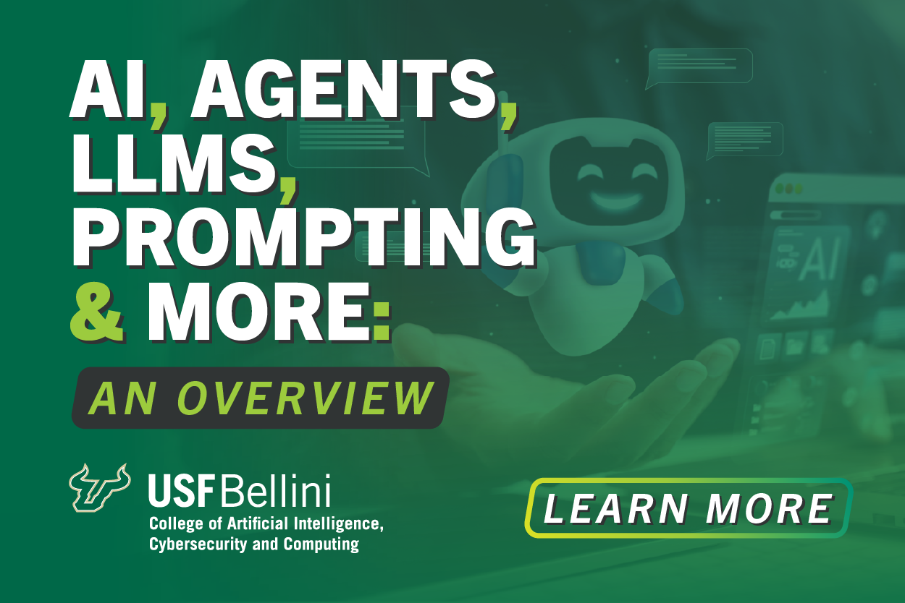

Building AI Confidence: New USF Microcourse Explores Agents, LLMs and Responsible AI Use
The University of South Florida's new free, online microcourse, AI, Agents, LLMs, Prompting and More: An Overview, helps close that gap by helping learners understand how AI systems generate responses, where they can fall short, and how to evaluate their outputs.
October 26, 2026Artificial Intelligence